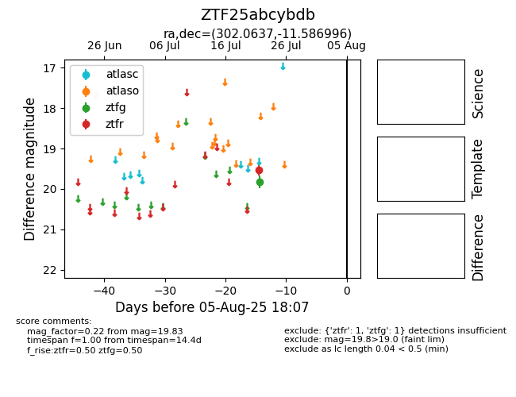

Target ZTF25abcybdb at 2025-08-05 18:07, see:
FINK: fink-portal.org/ZTF25abcybdb
Lasair: lasair-ztf.lsst.ac.uk/objects/ZTF25abcybdb
ALeRCE: alerce.online/object/ZTF25abcybdb
alt names
ZTF25abcybdb (ztf,fink)
coordinates:
equatorial (ra, dec) = (302.0637,-11.58700)
galactic (l, b) = (30.9616,-22.23279)
photometry
last ztfg=19.83, ztfr=19.53
1 ztfg, 1 ztfr detections
